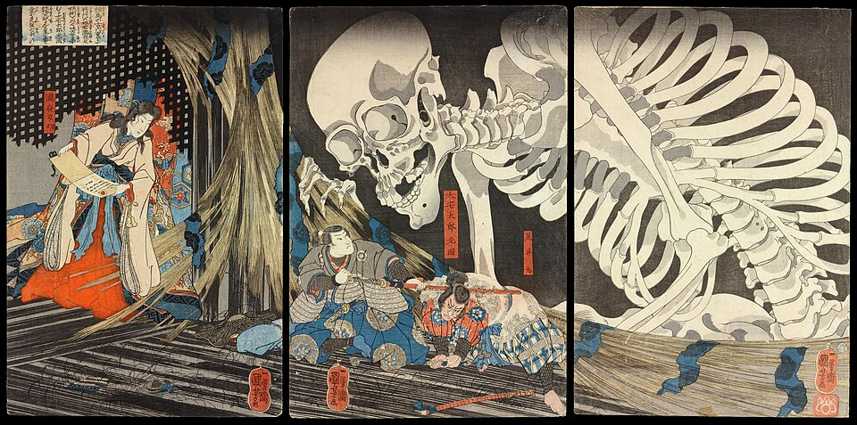

NO.1 WENDIGO

wendigo are creatures born out of hunger. tracing back to canadian folklore during winters when starved and left all alone in the snowy canadian mountaines the starving hunger would turn people into wendigos creatures with an insatiable hunger killing and eating all biological life in their way including humans.
NO.2 GOATMAN

A shape shifting creature whose arrival is signified by the ozone-like smell described by anansi as the type of smell one gets after a nosebleed,the smell is so dense that it cuts through even campfire level of smoke. The creature is known to be hyper intelligent and is able to mimic humans so well that it becomes utterly indistinguishable from a normal human and it loves to torment people by instilling fear and paranoia.The shape-shifter got popularised in modern media from anansi's goatman story from 2012.
NO.3 Ju-On

The legend of Oiwa, a faithful woman betrayed by her ruthless samurai husband, Iemon, is Japan’s ultimate onryō tale. Poisoned so Iemon could wed a wealthy neighbor, Oume, the disfigured Oiwa died in agony. Her vengeful spirit exacted a horrific toll, tricking Iemon into decapitating his new bride. Today, this curse haunts the famous kabuki play Yotsuya Kaidan; to avert disaster, actors must devoutly pay respects at Oiwa’s Tokyo grave beforehand.Even in the modern day the legend holds enough recognition to the point of inspiring major horror movies like the grudge.
NO.4 THE LEGEND OF THE KITSUNE

The Kitsune is an ethereal, functionally immortal shape-shifter whose longevity stems from absorbing spiritual energy over centuries. These celestials possess reality-warping sorcery, manifesting kitsunebi (fox-fire) and illusions. They branch into thirteen distinct elemental types, most notably the benevolent, multi-tailed Zenko (celestial messengers of Inari) and the malevolent, chaotic Yako (field foxes).
NO.5 Gashadokuro

Part of the old yokai stories from japan the origins of this creature rise from war hunger and famine,it's said that when famines occured and a wars left unprotected the combined malice of the dead would end up forming the nocturnal specter towering over hundreds of meters tall the Gashadokuro is known to have an insatiable eternal hunger which would go on to make it eat humans.It would never target large groups of humans or any animals or plants but rather was a solitary hunter which only hunted and ate humans and after it's bloodthirst was temporarely satisfied or sun rise was near,it would collapse back into harmless mound of ordinary bones until the next night.The name Gashadokuro comes from the clattering sound of bones gachi-gachi that it would make while approaching it's targets where in kanji the specific letters used for gachi-gachi meant starvation or hunger,moreover the yokai had the ability to wander silently without making any noise as it arose after midnight and the prey would only hear the gachi-gachi noise by the time it was right beside them.The earliest accounts of the creature come from the legend of Takiyasha-hime the sorceress daughter of the samurai Taira no Masakado who led a rebellion against the central government and was killed in battle, Takiyasha-hime later took her revenge by using her occult arts summoned the giant nocturnal specter from the battlefield where bones of thousands of soliders lay unprotected.
NO.6 JACK O LANTERN

The halloween mascot has an origin story that has been spooking people since ages. Stingy Jack was a notorious 17th-century Irish rogue, blacksmith, and silver-tongued drunkard. Renowned for his insatiable greed and malicious cunning, he routinely manipulated both his neighbors and the Devil himself. Jack valued earthly trickery above moral salvation, ultimately doomed by his own deceitful hubris to wander the mortal realm forever as a restless phantom.